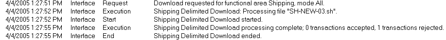
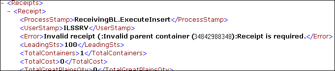

If you encounter a problem running the interface (regardless of the method you are using), there are several areas you can research to troubleshoot the error:
- Primary Troubleshooting Methods
- Touchpoint-Specific Troubleshooting Tips: Order/Shipment Touchpoint , Receipt Touchpoint
There are four main places in SCALE where you can troubleshoot a failed interface job: the Process History Insight Screen, XML error files, the Audit Log, and the Background Job Queue Insight Screen. Below are detailed descriptions on how to use these while researching errors.
Your first destination for interface troubleshooting should be the Process History Insight Screen. Here you can discern whether or not the interface started/ended, and if the system accepted/rejected the data transactions.
Access: First, access the Process History Insight Screen, and choose the value "Interface" in the Process Field. When you press Search, the system will display results similar to the following:

Analyze: In the case above, the interface executed normally; however, ultimately the system rejected the data transaction. Causes for this could include such things as values in the wrong format, or the system found no files with the required extension. Also, if the history records do not indicate that the interface even started successfully, then there could be a problem with the process queue. See the background job viewer section of this topic for instructions on how to see what tasks are currently pending in the process queue.
It can also be helpful to check the XML error file that SCALE generates when there is a problem in running the interface. After the interface process finishes executing, the system places these files in the "Output" subdirectory of SCALE's interface directory. Each error file will have an extension that is defined on the Interface Process Detail Window.
Access: On your application server, navigate to the following directory: \ILS\Interface\Output\. Locate the specific error file that the system generated for your specific interface process. Open this file using Notepad or an XML editor (rename the error file with a .xml extension and open it). What is displayed will be similar to the following:

Analyze: You do not need to be fluent in XML code to troubleshoot problems using this file. You can view these files in SCALE using the Interface Error Insight Screen. Also, you can simply open the error text file in Notepad or an XML editor, and search for the Error node, which will appear near the data that caused the error in question (see the above example). Note that this Error node does not affect processing in any way, as it is a part of the base XML schema.
Reprocessing XML Error Files: The system allows you to reprocess an XML error file without changing its default file extension. For example, suppose you define in your receipt delimited interface process record, you define error files to have an extension of .rcerr. Then, when the system generates an error file because of failed processing, you can move this error file to the download directory, run the interface, and the system will know to retrieve and process the .rcerr file. Keep in mind, though, that you will also need to edit the data that caused the error file to initially generate, else the XML data will be rejected again. Also note that you must reprocess this file with the error extension.
If the system did not generate any error files for your interface job, and the history data is not helpful, there may be a technical problem with the interface itself. You can research such problems in the Audit Log Insight Screen.
Access: You can open this screen from the desktop. Simply provide the appropriate filter criteria and press the Apply button.
Analyze: The system will then display any audits that the system has logged, if any. If an audit from the interface was logged, work with your IT staff or Manhattan representative to resolve this problem.
If you cannot find any evidence of the interface process running, then the there may be a problem with the queue processing service not kicking off the interface. You can use the Background Job Queue Insight Screen to determine if this is the case.
Access: You can open this screen from the desktop. Perform a search by choosing "Interface" as a process type, and indicating the appropriate process time.
Analyze: The status of "Ready" indicates that the queue has yet to process the "begin interface" request. While this might be normal depending on SCALE's workload, these requests should not lie in this status for an indefinite period of time. If the status does not change to "In Process" within a reasonable amount of time, then the queue for some reason will not execute these interface requests. Work with your Manhattan representative to resolve this problem.
Below are some suggestions on how to address problems that may arise when downloading or uploading order data:
Below are some suggestions on how to address problems that may arise when downloading or uploading receipt data:
Handling of Zero Quantity Records: The system allows downloading new receipt line with 0 quantity in XML mode. However, the system does not support creating zero quantity entry using user interface (UI). Additionally, updating a line with zero quantity through the receipt interface download is also not allowed.